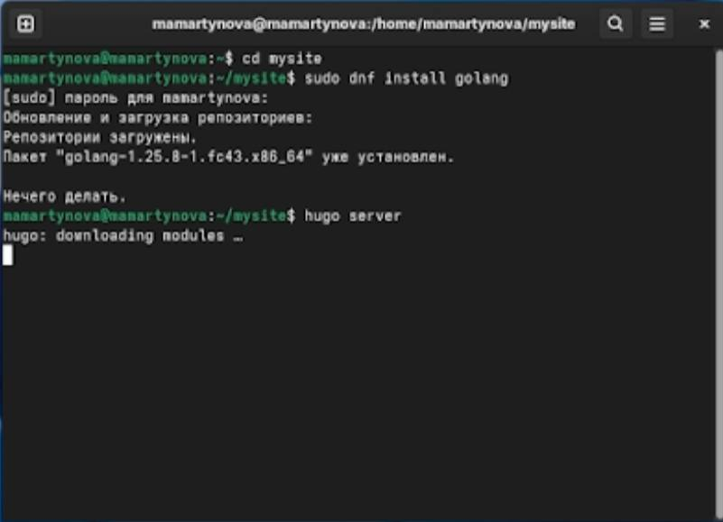
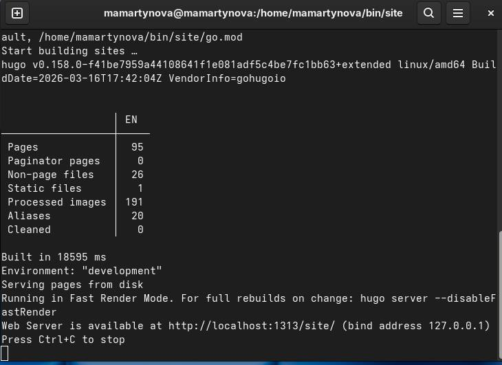
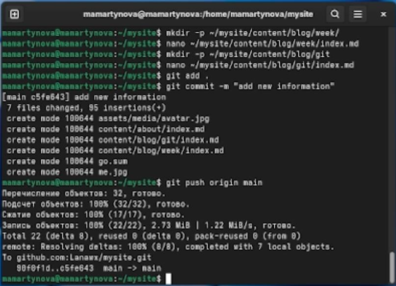
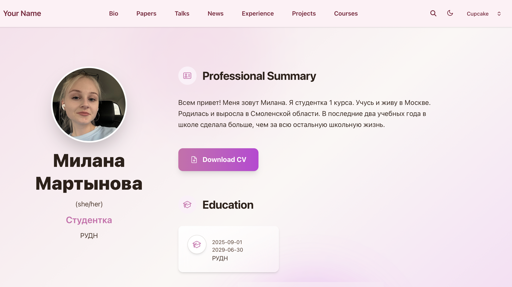

Информация
Докладчик
- Мартынова Милана Александровна
- Студент НКАбд-04-25
- Российский университет дружбы народов
- 1032253522@rudn.ru
1. Цель работы
Осуществить дальнейшую работу с сайтом, привести его в соответствие с
установленными требованиями и разместить на нем личные данные.
2. Задание
- Разместить фотографию владельца сайта.
- Разместить краткое описание владельца сайта (Biography).
- Добавить информацию об интересах (Interests).
- Добавить информацию от образовании (Education).
- Сделать пост по прошедшей неделе.
- Добавить пост на тему по выбору: Управление версиями. Git.
Непрерывная интеграция и непрерывное развертывание (CI/CD).
3. Выполнение лабораторной
работы
Скачиваю язык go для того чтобы изменения на сайте можно было
тестировать локально. (рис. 1)

Устновка go
Проверка запуска сайта на виртуальной машине. (рис. 2)

Локальный запуск сайта
Загружаю в директорию сайта измененый файл с биографией и два поста.
(рис. 3)

Загрузка изменений
Проверка изменений на сайте. (рис. 4)

Проверка изменений на сайте
4. Выводы
В ходе работы над сайтом были осуществлены его доработка согласно
установленным требованиям и внесение информации о себе.